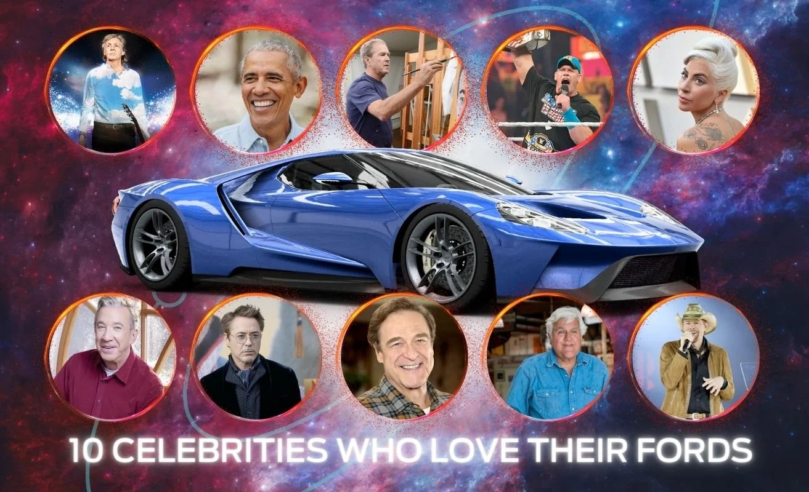
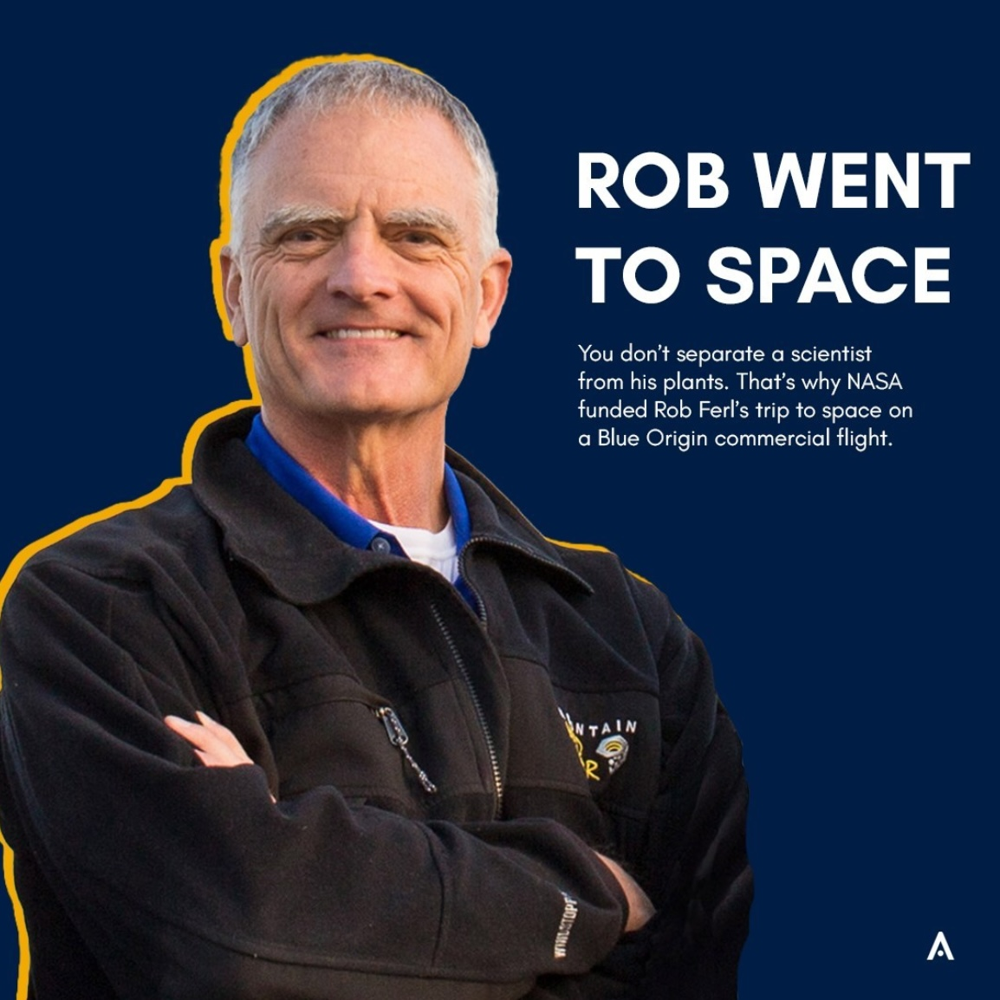

The Mullinax Pop Punk Playlist: Ultimate Driving Tunes
Now that it’s been over 20 years since the debut of the iPod and release of Bridget Jones’ Diary, we’re officially sanctioning 2000s nostalgia culture.
10 Celebrities Who Love Their Fords: Star-Studded Rides
Celebrities are just like the rest of us – they love their cars.
Rob Went To Space
In case you missed it: Swipe to learn about Rob Ferl's trip to space with @blueorigin
Space Facts
‘Tis the season for scary star science.
7 Washington Holiday Traditions to Add to Your Winter Calendar
Traditions. Not to go all Tevye on you, but they’re kind of a big deal.
Day in my Life at UF
New semester, new day in the life video! What’s your go-to coffee order?